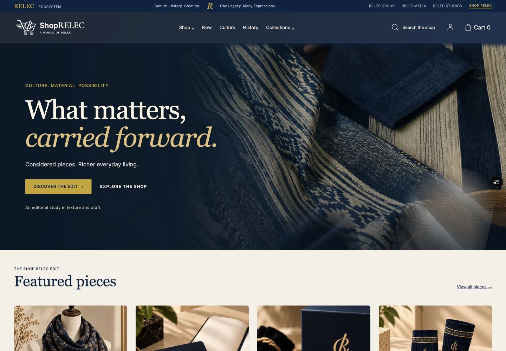
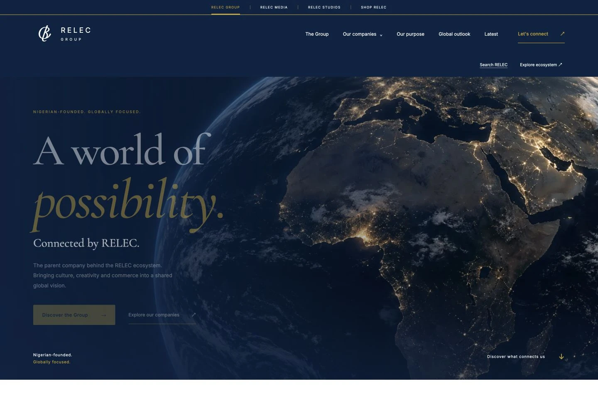

RELEC Media
An editorial platform bringing stories, culture, history and community into one connected reading experience.
The independent practice of M M Zikirullahi
I’m Mukhtar. I connect design, technology and storytelling to create identities, websites and experiences worth stepping into.
Choose a world
Every discipline has its own rhythm. Step into the one that speaks to your project.
Recent digital work
An editorial platform bringing stories, culture, history and community into one connected reading experience.

Storefront / proposal projectAn editorial commerce experience shaped around material, identity and the art of giving.

In developmentA corporate website that makes an ecosystem feel connected without flattening the identity of each company.
What I can help with
From the first visual idea to the experience people interact with.
A clear, responsive home for your business or idea.
Website pages · Frontend development · Website improvementsGive your idea a visual identity people can recognise.
Logo concepts · Visual identity · Brand mockupsBring people and stories into focus.
Photography · Video editing · Digital contentHelp people see a space or explore an experience.
Architectural renders · 3D modelling · VR prototypesHave something in mind?
Tell me what you’re building, who it’s for and where you need a creative hand.
Start a conversation